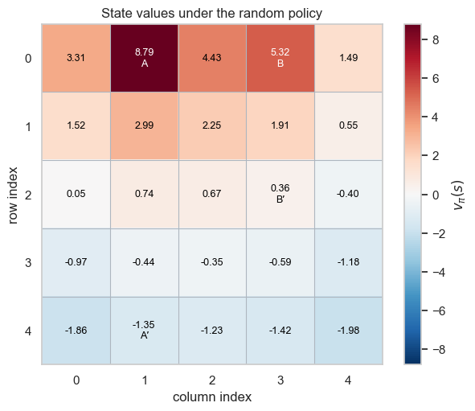
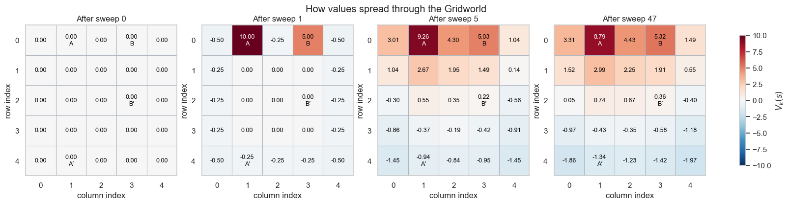
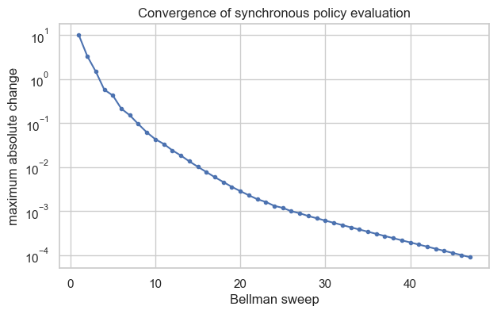

import numpy as np
import matplotlib.pyplot as plt
import seaborn as sns
from matplotlib.axes import Axes
from matplotlib.image import AxesImage
from numpy.typing import NDArray
# Use the same plotting style as the other course notebooks.
sns.set_theme(style="whitegrid", context="notebook")Gridworld policy evaluation

This notebook evaluates a fixed policy in a small Gridworld. Fixing the policy turns the Markov decision process (MDP) into a Markov reward process (MRP): at each state, the policy already specifies which action to take or with what probabilities to choose among the actions. The agent follows that rule; there is no policy to choose or learn. Our task is to compute the expected discounted return from each state.
What we will do
- Define the same \(5 \times 5\) Gridworld used in the course explorers. We use zero-indexed coordinates: the upper-left state is \((0, 0)\) and the lower-right state is \((4, 4)\).
- Fix a uniform random policy, which selects each of the four actions with probability \(1/4\).
- Build the policy-specific transition matrix \(P_\pi\) and expected immediate-reward vector \(r_\pi\).
- Compute \(v_\pi\) once by solving a linear system and again through synchronous Bellman expectation updates.
The two methods should agree. The iterative method is the one to keep in mind for later reinforcement-learning algorithms.
1. Define the Gridworld environment
The agent can choose up, right, down, or left at every state. Ordinary in-grid moves have reward \(0\). An attempted move through the boundary leaves the agent in the same state and gives reward \(-1\).
Two source states override the selected direction:
- \(A=(0,1)\) sends the agent to \(A'=(4,1)\) with reward \(+10\).
- \(B=(0,3)\) sends the agent to \(B'=(2,3)\) with reward \(+5\).
The environment is deterministic: once we know a state and an action, the next state and reward are fixed.
GRID_SIZE = 5
GAMMA = 0.9
State = tuple[int, int] # (row, column)
# The action order matches the course exploration pages.
ACTIONS = [
("up", -1, 0, "↑"),
("right", 0, 1, "→"),
("down", 1, 0, "↓"),
("left", 0, -1, "←"),
]
A = (0, 1)
A_PRIME = (4, 1)
B = (0, 3)
B_PRIME = (2, 3)
TELEPORTS = {
A: (A_PRIME, 10.0),
B: (B_PRIME, 5.0),
}
def in_grid(state: State) -> bool:
"""Return True when a zero-indexed state lies inside the 5-by-5 grid."""
row, column = state
return 0 <= row < GRID_SIZE and 0 <= column < GRID_SIZE
def transition(state: State, action_index: int) -> tuple[State, float]:
"""Return (next_state, reward) after taking one action from one state."""
# A and B are special source states: every action has the same outcome.
if state in TELEPORTS:
return TELEPORTS[state]
_, row_change, column_change, _ = ACTIONS[action_index]
row, column = state
candidate = (row + row_change, column + column_change)
# A boundary action is a self-loop with reward -1.
if not in_grid(candidate):
return state, -1.0
# Every ordinary in-grid transition has reward 0.
return candidate, 0.0
def state_to_index(state: State) -> int:
"""Map (row, column) to one of the 25 entries of a value vector."""
row, column = state
return row * GRID_SIZE + column
def index_to_state(index: int) -> State:
"""Inverse of state_to_index."""
return divmod(index, GRID_SIZE)A few transitions make the rules concrete. Notice that the action is still listed at \(A\) and \(B\), even though it does not affect their teleport outcome.
examples = [
((0, 0), 0), # Up from the upper-left corner: boundary self-loop
((0, 0), 1), # Right into A: ordinary move with reward 0
(A, 2), # Down from A: forced teleport
(B, 3), # Left from B: forced teleport
]
for state, action_index in examples:
action_name = ACTIONS[action_index][0]
next_state, reward = transition(state, action_index)
print(f"{state} + {action_name:>5s} -> {next_state}, reward = {reward:+.0f}")(0, 0) + up -> (0, 0), reward = -1
(0, 0) + right -> (0, 1), reward = +0
(0, 1) + down -> (4, 1), reward = +10
(0, 3) + left -> (2, 3), reward = +52. Fix a uniform random policy
For this notebook, the agent follows the same policy at every state:
\[ \pi_{\mathrm{random}}(a \mid s) = \frac{1}{4}, \qquad a \in \{\uparrow, \rightarrow, \downarrow, \leftarrow\}. \]
This makes the Gridworld an MRP. The Bellman expectation equation becomes
\[ v_\pi(s) = \sum_a \pi(a \mid s) \left[r(s,a,s') + \gamma v_\pi(s')\right], \]
because this particular environment has a single deterministic outcome \((s',r)\) for each state-action pair.
N_STATES = GRID_SIZE * GRID_SIZE
N_ACTIONS = len(ACTIONS)
# policy[row, column, action] stores pi(action | state).
random_policy = np.full(
(GRID_SIZE, GRID_SIZE, N_ACTIONS),
fill_value=1 / N_ACTIONS,
)
def build_policy_model(
policy: NDArray[np.float64],
) -> tuple[NDArray[np.float64], NDArray[np.float64]]:
"""Build P_pi and r_pi for a fixed policy in this deterministic Gridworld."""
transition_matrix = np.zeros((N_STATES, N_STATES))
expected_rewards = np.zeros(N_STATES)
for row in range(GRID_SIZE):
for column in range(GRID_SIZE):
state = (row, column)
state_index = state_to_index(state)
for action_index in range(N_ACTIONS):
probability = policy[row, column, action_index]
next_state, reward = transition(state, action_index)
next_index = state_to_index(next_state)
# Average the transition and immediate reward over policy actions.
transition_matrix[state_index, next_index] += probability
expected_rewards[state_index] += probability * reward
return transition_matrix, expected_rewards
P_pi, r_pi = build_policy_model(random_policy)
print("P_pi shape:", P_pi.shape)
print("Every row of P_pi sums to one:", np.allclose(P_pi.sum(axis=1), 1.0))
print(f"Expected immediate reward at (0, 0): {r_pi[state_to_index((0, 0))]:+.2f}")
print(f"Expected immediate reward at A={A}: {r_pi[state_to_index(A)]:+.2f}")P_pi shape: (25, 25)
Every row of P_pi sums to one: True
Expected immediate reward at (0, 0): -0.50
Expected immediate reward at A=(0, 1): +10.00The expected reward at \((0,0)\) is \(-0.5\): two of the four random actions hit a boundary and receive \(-1\). At \(A\), every action produces the \(+10\) teleport reward.
In vector form, the Bellman expectation equation for this fixed policy is
\[ \mathbf{v}_\pi = \mathbf{r}_\pi + \gamma P_\pi \mathbf{v}_\pi, \]
or equivalently,
\[ (I - \gamma P_\pi)\mathbf{v}_\pi = \mathbf{r}_\pi. \]
3. Solve the value function directly
This Gridworld has only 25 states, so we can solve the linear system directly. We use np.linalg.solve, which solves the system without explicitly forming a matrix inverse.
identity = np.eye(N_STATES)
v_direct = np.linalg.solve(identity - GAMMA * P_pi, r_pi)
V_direct = v_direct.reshape(GRID_SIZE, GRID_SIZE)
print("Direct-solve value at A:", round(V_direct[A], 3))
print("Direct-solve value at B:", round(V_direct[B], 3))Direct-solve value at A: 8.789
Direct-solve value at B: 5.322Plot the state values
Reshaping the solution into a grid lets us see how expected returns vary by state. Red indicates higher values, white is near zero, and blue indicates lower values.
def draw_value_grid(
values: NDArray[np.float64],
title: str,
ax: Axes,
*,
value_limit: float | None = None,
) -> AxesImage:
"""Draw a zero-indexed Gridworld value table on one Matplotlib axis."""
if value_limit is None:
value_limit = float(np.max(np.abs(values)))
image = ax.imshow(values, cmap="RdBu_r", vmin=-value_limit, vmax=value_limit)
ax.set_title(title)
ax.set_xlabel("column index")
ax.set_ylabel("row index")
ax.set_xticks(range(GRID_SIZE))
ax.set_yticks(range(GRID_SIZE))
# Cell centers carry the labels; half-integers are the boundaries.
boundaries = np.arange(0.5, GRID_SIZE - 1)
ax.set_xticks(boundaries, minor=True)
ax.set_yticks(boundaries, minor=True)
ax.grid(False, which="major")
ax.grid(True, which="minor", color="#aeb6bf", linewidth=0.8)
ax.tick_params(which="minor", bottom=False, left=False)
special_labels = {A: "A", A_PRIME: "A′", B: "B", B_PRIME: "B′"}
for row in range(GRID_SIZE):
for column in range(GRID_SIZE):
state = (row, column)
label = f"{values[row, column]:.2f}"
if state in special_labels:
label += f"\n{special_labels[state]}"
red, green, blue, _ = image.cmap(image.norm(values[state]))
brightness = 0.2126 * red + 0.7152 * green + 0.0722 * blue
text_color = "white" if brightness < 0.5 else "black"
ax.text(column, row, label, ha="center", va="center", fontsize=9, color=text_color)
return image
fig, ax = plt.subplots(figsize=(7, 5.5))
image = draw_value_grid(V_direct, "State values under the random policy", ax)
fig.colorbar(image, ax=ax, label=r"$v_\pi(s)$")
plt.show()
The direct solve gives the exact state values for this known finite MRP. It is useful as a reference, but it relies on having the complete transition model and becomes impractical for large state spaces.
4. Estimate the same value function iteratively
Instead of solving all 25 equations at once, start from \(\mathbf{v}_0=0\) and repeatedly apply
\[ \mathbf{v}_{k+1} = \mathbf{r}_\pi + \gamma P_\pi \mathbf{v}_k. \]
Each update below is synchronous: every value in \(\mathbf{v}_{k+1}\) uses the complete previous vector \(\mathbf{v}_k\). The maximum absolute change tells us when the estimates have stabilized.
def evaluate_policy_synchronously(
P_pi: NDArray[np.float64],
r_pi: NDArray[np.float64],
gamma: float,
tolerance: float = 1e-4,
max_sweeps: int = 10_000,
) -> tuple[NDArray[np.float64], list[NDArray[np.float64]], NDArray[np.float64]]:
"""Estimate v_pi with synchronous Bellman expectation backups."""
values = np.zeros(N_STATES)
value_history = [values.copy()]
max_changes = []
for _ in range(max_sweeps):
# Matrix multiplication uses only the old value vector on the right.
updated_values = r_pi + gamma * (P_pi @ values)
max_change = np.max(np.abs(updated_values - values))
values = updated_values
value_history.append(values.copy())
max_changes.append(max_change)
if max_change < tolerance:
break
else:
raise RuntimeError("The value estimates did not converge within max_sweeps.")
return values, value_history, np.asarray(max_changes)
v_iterative, history, max_changes = evaluate_policy_synchronously(
P_pi,
r_pi,
gamma=GAMMA,
)
V_iterative = v_iterative.reshape(GRID_SIZE, GRID_SIZE)
print(f"Converged after {len(max_changes)} synchronous Bellman sweeps.")
print(f"Final maximum change: {max_changes[-1]:.2e}")
print(f"Maximum absolute difference from the direct solution: {np.max(np.abs(V_iterative - V_direct)):.2e}")Converged after 47 synchronous Bellman sweeps.
Final maximum change: 9.10e-05
Maximum absolute difference from the direct solution: 8.06e-04snapshot_indices = [0, 1, 5, len(history) - 1]
value_limit = float(max(np.max(np.abs(snapshot)) for snapshot in history))
fig, axes = plt.subplots(
1,
len(snapshot_indices),
figsize=(16, 4),
constrained_layout=True,
)
for ax, sweep_index in zip(axes, snapshot_indices):
snapshot = history[sweep_index].reshape(GRID_SIZE, GRID_SIZE)
image = draw_value_grid(
snapshot,
f"After sweep {sweep_index}",
ax,
value_limit=value_limit,
)
fig.colorbar(image, ax=axes, shrink=0.8, label="$V_k(s)$")
fig.suptitle("How values spread through the Gridworld")
plt.show()
fig, ax = plt.subplots(figsize=(7, 4))
ax.semilogy(np.arange(1, len(max_changes) + 1), max_changes, marker="o", markersize=3)
ax.set_xlabel("Bellman sweep")
ax.set_ylabel("maximum absolute change")
ax.set_title("Convergence of synchronous policy evaluation")
plt.show()

Optional: What if updates were asynchronous?
In a synchronous sweep, every state reads from the same previous value grid. In an asynchronous update, we can update one state at a time in place, using the latest available values. For example, if we update \((0,0)\) first, the backup at \((1,0)\) can immediately use its new value for the action that moves up.
The Bellman equation and the fixed policy stay the same. Here, with \(\gamma < 1\), both approaches converge to the same state values if every state keeps getting updated. The intermediate estimates can differ depending on the update order.
Takeaways
- A fixed policy turns this MDP into an MRP with one value \(v_\pi(s)\) for every state.
- For a small known MRP, a linear-system solve and iterative Bellman expectation updates produce the same values.
- The iterative method repeatedly propagates immediate rewards and discounted future values through the state space.
- In the next notebook, the agent will improve the policy rather than merely evaluate a fixed one.